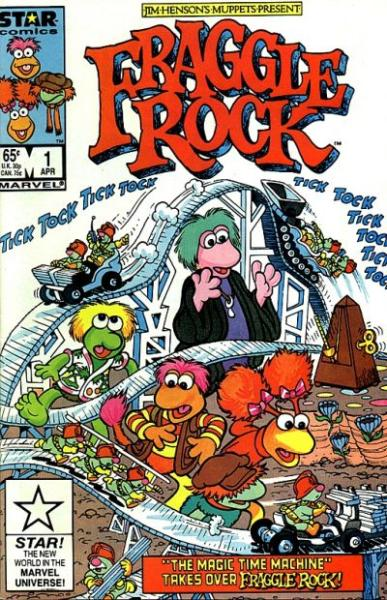

Fraggle Rock is a children's television series about interconnected societies of Muppet creatures, created by Jim Henson. Unlike Sesame Street, which had been created for a single market and later adapted for international markets, Fraggle Rock was intended from the start to be an international production and the entire show was constructed with this in mind.
Fraggle Rock debuted in 1983 as one of the first shows involving the collaboration of Henson International Television (HiT Entertainment from 1989), the international arm of Jim Henson Productions. The co-production brought together British regional ITV franchise-holder Television South (TVS), CBC Television, United States pay-television service Home Box Office and Henson Associates (later Jim Henson Productions). Filming took place on a Toronto sound-stage (and later at Elstree Studios, London). The avant-garde poet bpNichol worked as one of the show's writers.
Henson described the Fraggle Rock series as "a high-energy, raucous musical romp. It's a lot of silliness. It's wonderful." The program proved accessible to audiences of all ages, and used the fantasy creatures as an allegory to deal with serious issues such as prejudice, spirituality, personal identity, the environment, and social conflict.

Series: 8 issues, 1985-1986
Publisher: Star (Marvel)